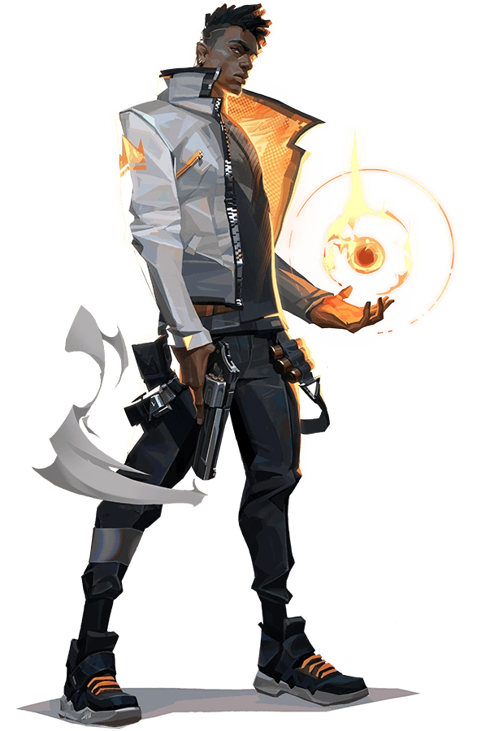
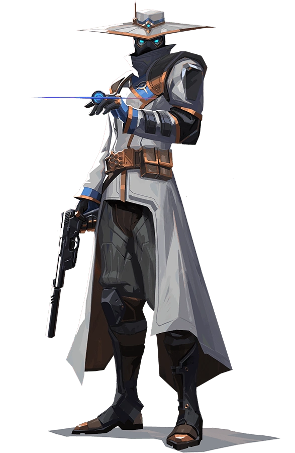

Cada personaje de VALORANT, tiene un ahistoria, comienzo nudo y
presente,cada uno con diferentes pasados y experiencias.
Brimstone
Es un agente estadounidense que se asegurará
de que su escuadrón siempre juegue con ventaja.
Su habilidad otorga información de forma precisa
y a distancia, lo que lo hace un comandante sin
igual en el campo.
Sage
Originaria de China, Sage destaca a la hora
de crear espacios seguros para su equipo allá
donde va. Sus capacidades especiales para revivir
a compañeros caídos en batalla y para mantener a
raya los asaltos enemigos la convierten en la calma
en mitad de la tormenta para su equipo.
Jeet
viene de Corea del Sur, y su estilo de lucha
ágil y evasivo le permite asumir grandes riesgos.
Corre y salta de aquí para allá en las refriegas y
hace trizas a los enemigos con una rapidez espectacular.

Phoenix
Proviene del Reino Unido y sus poderes estelares
salen a relucir con su estilo de combate, que prende fuego
al campo de batalla de forma deslumbrante. No le hacen falta
refuerzos; es él quién se lanza al combate y marca el ritmo.
Viper
Es una química estadounidense con un amplio arsenal
de dispositivos venenosos que le sirven para tomar el
control del campo de batalla y cegar a los enemigos.
Si las toxinas no acaban con su presa, la paranoia la rematará.
Yoru
Nacido en Japón, abre agujeros en el tejido de
la realidad para infiltrarse tras las líneas
enemigas sin ser visto. Utiliza el engaño y la
agresividad por igual para acabar con sus objetivos
antes de que sepan qué ha pasado.
Sky
Es la nueva reina de la utilidad en Valorant,
y aunque tardemos unas cuantas partidas en mejorar
con ella, es más que rentable invertir ese tiempo.
Como es evidente, está pensaba para jugadores cuyo
rol sea de apoyo, y deberíamos huir de ella si nuestra
especialidad es el daño.
Reyna
Es el undécimo agente disponible en Valorant
desde el lanzamiento oficial del juego. Una mercenaria
mexicana con habilidades de lo más extravagantes que
tienes que aprender a utilizar si quieres ser un buen duelista.
Omen
Omen es un fantasma de tiempos pasados que acecha
en las sombras. Es capaz de cegar al enemigo, teleportarse
a través del campo de batalla y sembrar el caos y la paranoia
mientras sus rivales se preguntan dónde atacará la próxima vez.
Astra
Astra, la agente ghanesa, controla las energías del
cosmos para dar forma al campo de batalla a su antojo.
Con pleno dominio de su forma astral y un gran talento
para la anticipación estratégica, siempre va eones por
delante de los movimientos de sus enemigos.
Kayo
KAY/O es una máquina de guerra creada con un solo
propósito: neutralizar radiantes. Su poder para suprimir
las habilidades enemigas neutraliza la capacidad de sus
rivales para contraatacar, un aspecto que le da a él y a
sus aliados la ventaja definitiva en la batalla.
Killjoy
Killjoy es una brillante agente alemana que se encarga
de tomar el campo de batalla con un amplio arsenal de
inventos. Si el daño de sus invenciones no detiene a los
enemigos, la debilitación de sus robots los convertirá en
presas fáciles.
Neon
Neon, una agente filipina, se lanza hacia la batalla
a una velocidad trepidante, disparando descargas
bioeléctricas tan rápido como las genera su cuerpo.
Se adelanta para pillar a sus enemigos desprevenidos
y acaba con ellos más rápido que una bala.
Raze
Raze llega desde Brasil con ganas de hacer que todo
salte por los aires. Gracias a su estilo de juego
basado en la fuerza bruta, destaca a la hora de barrer
a grupos de enemigos atrincherados y de despejar áreas
estrechas con explosión y sin compasión.
Fade
Fade, la cazarrecompensas turca, controla el poder de
las pesadillas para poner al descubierto los secretos
de los enemigos. Armada con el terror mismo, da caza a
sus objetivos y revela sus miedos más profundos, para
después acabar con ellos en la oscuridad.

Chyper
Cypher es un experto en información de Marruecos
que se especializa en redes de vigilancia y es
capaz de seguirle la pista al enemigo constantemente.
No hay secreto a salvo ni maniobra que pase desapercibida.
Cypher siempre está alerta.
Gekko
Gekko, de Los Ángeles, lidera una pequeña pandilla
de calamitosas criaturas. Sus colegas toman la delantera
para dispersar a los enemigos, mientras que Gekko los
persigue para luego reagruparse y repetir el proceso.
Breach
Breach, el sueco biónico, dispara una serie
de explosiones cinéticas controladas para abrirse
paso por el territorio enemigo. Su capacidad para
infligir daño y sembrar el caos garantiza que los
combates siempre estén de su parte.
Sova
Nacido en el eterno invierno de la tundra rusa, Sova
destaca a la hora de localizar,
perseguir y eliminar a los enemigos con una eficiencia
y una precisión inclementes. Su arco personalizado junto
con su sobrenatural capacidad de rastreamiento hacen que sea
imposible escapar.
Harbor
Desde las costas de la India, Harbor llega al campo
de batalla armado con tecnología ancestral capaz de
controlar el agua. Libera espumosos torrentes y
demoledoras olas para escudar a sus aliados y machacar
a quien se interponga en su camino
Chamber
Chamber, el diseñador de armas francés, siempre bien
vestido y bien pertrechado y expulsa a los agresores
con precisión letal. Aprovecha su arsenal personalizado
para repeler, eliminar enemigos a distancia y crear la
contingencia perfecta para cada plan.